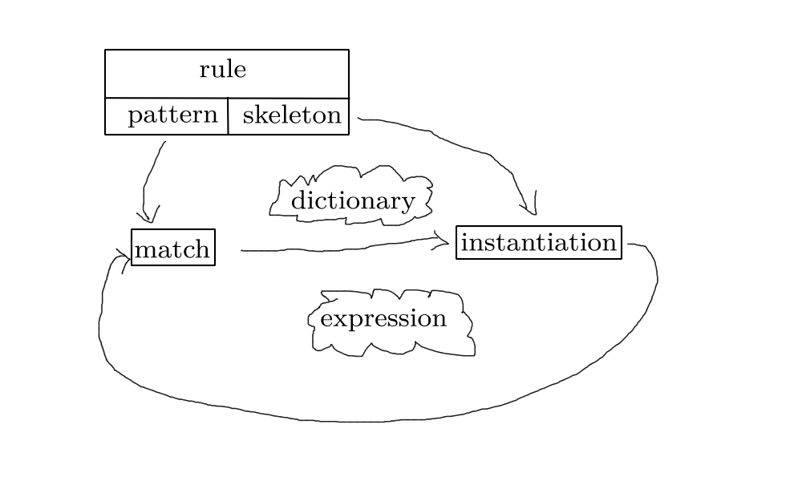

SICP 4a
Pattern-matching: Rule-based Substitution
Table of Contents
1 Overview
Having in the previous lecture implemented the rules of differentiation, we will now attempt to wield the computer with tools to parse language.
Rule
Pattern ------–—> Skeleton
| |
| Match | Instantiation
| |
V V
Expression |---–—> Expression
Source Target
(define deriv-rules
'(
((dd (?c c) (? v)) 0)
((dd (?v v) (? v)) 1)
((dd (?v u) (? v)) 0)
((dd (+ (? x1) (? x2)) (? v))
(+ (dd (: x1) (: v))
(dd (: x2) (: v))))
((dd (* (? x1) (? x2)) (? v))
(+ (* (: x1) (dd (: x2) (: v)))
(* (dd (: x1) (: v)) (: x2 ))))
((dd (** (? x) (?c n)) (: v))
(* (* (: n)
(** (: x) (: (- n 1))))
(dd (: x) (: v))))
))
: stands for substitution object.
2 Pattern match
foo |
matches exactly itself |
(f a b) |
matches any list with 1st, 2nd and 3rd elements as f a b |
(? x) |
matches anything, call it x |
(?c x) |
matches constant, call it x |
(?v x) |
matches variable, call it x |
3 Skeletons
foo |
instantiates itself |
(f a b) |
instantiates to 3-list results of instantiating each of f a b |
(: x) |
instantiate to the value of x in the pattern matched |
4 Simplifying
Need to create a simplifier to parse the differentiation rules.
(define dsimp (simplifier deriv-rules))
Want to create dsimp such that the following output is obtained.
(dsimp '(dd (+ x y) x)) (+ 1 0)
Evidently this can be further reduced using algebraic rules.
5 Algebra rules
The rules of algebraic simplification.
(define algebra-rules
'(
(((? op) (?c e1) (?c e2))
(: (op e1 e2)))
(((? op) (? e1) (?c e2))
((: op) (: e2) (: e1)))
((+ 0 (? e)) (: e))
((* 1 (? e)) (: e))
((* 0 (? e)) 0)
((* (?c e1) (* (?c e2) (? e3)))
(* (: (* e1 e2)) (: e3)))
((* (? e1) (* (?c e2) (? e3)))
(* (: e2) (* (: e1) (: e3))))
((* (* (? e1) (? e2) (? e3)))
(* (: e1) (* (: e2) (: e3))))
((+ (?c e1) (+ (?c e2) (? e3)))
(+ (: (+ e1 e2)) (: e3)))
((+ (? e1) (+ (?c 32) (? e3)))
(+ (: e2) (+ (: e1) (: e3))))
((+ (+ (? e1) (? e2)) (? e3))
(+ (: e1) (+ (: e2) (: e3))))
((+ (* (?c c) (? a)) (* (?c d) (? a)))
(* (: (+ c d)) (: a)))
((* (? c) (+ (? d) (? e)))
(+ (* (: c) (: d)) (* (: c) (: e))))
))
6 Diagram
Each rule has a pattern and a skeleton.

7 Match
Implement pattern matching.
(define (match pat exp dict)
(cond ((eq? dict 'failed) 'failed)
((atom? pat)
*** Atomic patterns)
*** Pattern variable clauses
((atom? exp) 'failed)
(else
(match (cdr pat)
(cdr exp)
(match (car pat)
(car exp)
dict)))))
Two trees have to be examined simultaneously: the tree of the expression and the tree of the pattern.
(+ (* (? x) (? y)) (? y)) (+ (* 3 x)) x)
Now fill in the atomic patterns' part.
((atom? pat)
(if (atom? exp)
(if (eq? pat exp)
dict
'failed)
'failed))
And now the rest.
((arbitrary-constant? pat)
(if (constant? exp)
(extend-dict pat exp dict)
'failed))
((arbitrary-variable? pat)
(if (variable? exp)
(extend-dict pat exp dict)
'failed))
((arbitrary-expression? pat)
(extend-dict pat exp dict))
8 Instantiation
How is the match instantiated?
(define (instantiate skeleton dict)
(define (loop s)
(cond ((atom? s) s)
((skeleton-evaluation? s)
(evaluate (eval-exp s) dict))
(else (cons (loop (car s))
(loop (cdr s))))))
(loop skeleton))
The magic happens in evaluate. evaluate will be covered in much more detail
in upcoming lectures.
(define (evaluate form dict)
(if (atom? form)
(lookup form dict)
(apply
(eval (lookup (car form) dict)
user-initial-environment)
(mapcar (lambda (v)
(lookup v dict))
(cdr form)))))
9 Simplify
Every rule will look at every node. If there's a match, a new expression is made, substituting into the skeleton. Continue calling in order to simplify.
GIGO: garbage in garbage out.
GIGO simplifier.
(define (simplifier the-rules)
(define (simplify-exp exp)
***)
(define (simplify-parts exp)
***)
(define(try-rules exp)
***)
simplify-exp)
(define (simplify-exp exp)
(try-rules (if (compound? exp)
(simplify-parts exp)
exp)))
(define (simplify-parts exp)
(if (null? exp)
'()
(cons (simplify-exp (car exp))
(simplify-parts (cdr exp)))))
The above can also be implemented using map.
(define (simplify-exp exp)
(try-rules
(if (compound? exp)
(map simplify-exp exp)
exp)))
try-rules.
(define (try-rules exp)
(define (scan rules)
***)
(scan the-rules))
(define (scan rules)
(if (null? rules)
exp
(let ((dict
(match (pattern (car rules))
exp
(empty-dictionary))))
(if (eq? dat 'failed)
(scan (dcdr rules))
(simplify-exp
(instantiate
(skeleton (car rules))
dict))))))
The pattern of recursion here is very complicated. And one of the most important things is not to think about that. If you try to think about the actual pattern by which this does something, you're going to get very confused. I would.
One key of programming and design, is knowing what not to think about.
Learn to program with abandon.
10 Wrapping up
How are dictionaries implemented?
(define (empty-dictionary) '())
(define (extend-dictionary put dat dict)
(let ((name (variable-name pat)))
(let ((v (assq name dict)))
(cond ((null? v)
(cons (list name dat) dict))
((eq? (cadr v) dat) dict)
(else 'failed)))))
(define(lookup var dict)
(let ((v (assq var dict)))
(if (null? v) var (cadr v))))
Note: this is by far the toughest lecture so far.